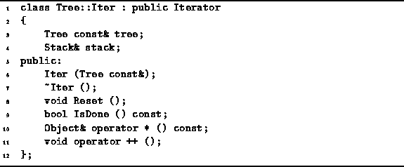

Data Structures and Algorithms
with Object-Oriented Design Patterns in C++
Data Structures and Algorithms
with Object-Oriented Design Patterns in C++A Tree::Iter contains two member variables--tree and stack. The former is a const reference to a Tree. Upon creation, an iterator is associated with a specific tree instance and that association remains until the iterator is destroyed. The second member variable is a reference to a Stack instance.

Program: Tree::Iter Class Definition
 Copyright © 1997 by Bruno R. Preiss, P.Eng. All rights reserved.
Copyright © 1997 by Bruno R. Preiss, P.Eng. All rights reserved.